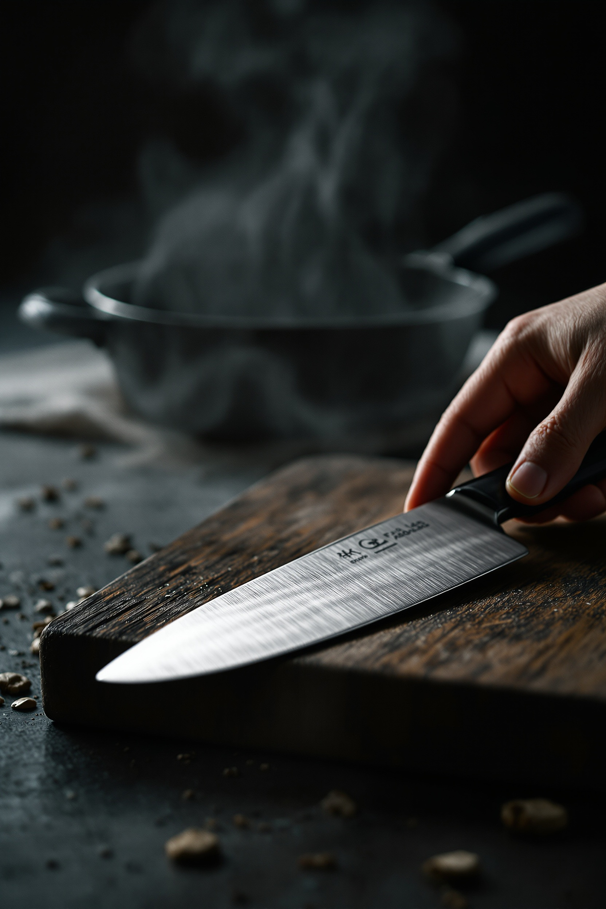
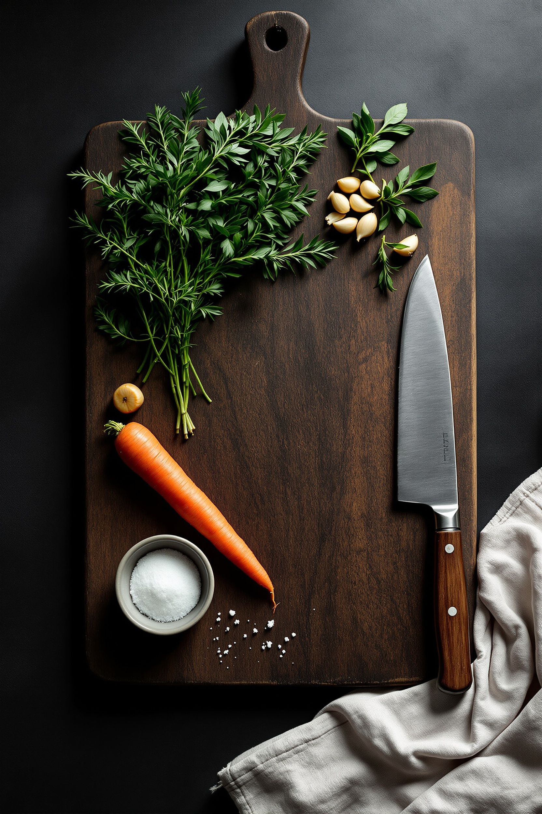
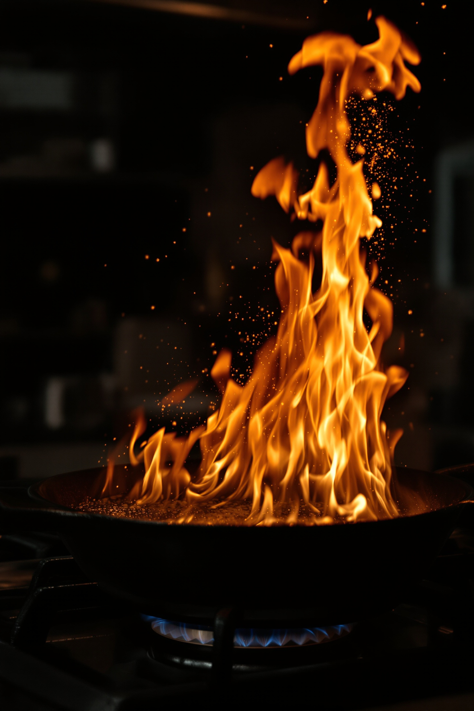

3 кадра без лица Максима — нож, доска, огонь. По 7 image-style anchors из концепта (cinematic lighting, dark editorial, 50mm f/2.0, Kodak 500T grain, warm shadows + cool highlights, tactile materials, Bradford Young palette).

Нож на тёмной aged-wood доске, рука с двумя пальцами берёт ручку, на заднем плане кастрюля с паром в полумраке, charcoal background. Семена/специи россыпью. Brushed-steel лезвие в свету. Editorial close-up.
Где использовать: Process #3 — первый кадр секции (нож как «инструмент мастерства»).

Тёмная дубовая разделочная доска, вид сверху. Тимьян и петрушка, чеснок, морковь, мисочка с солью, нож с деревянной рукояткой. Льняное полотенце справа. Charcoal background. Editorial flat-lay.
Где использовать: Process #3 — второй кадр секции (доска + материалы + ингредиенты).

Высокое пламя поднимается из чугунной сковороды на газовой плите. Газовая горелка с синим пламенем снизу. Искры жира в воздухе. Тёмный фон кухни. Драматичный кадр для контраста с тихими kitchen-shots.
Где использовать: Process #3 — третий кадр секции (огонь как «момент трансформации»). Альтернативно — секция #8 BOOKING как ambient-loop в фоне формы (если переделать в gif/webp).
3 × FLUX 1.1 Pro Ultra ($0.06 за image) = $0.18.
Итого: $1.68.